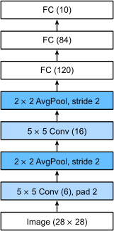

Convolutional Neural Networks
Chapter 7.1: From Fully Connected Layers to Convolutions
Based on "Dive into Deep Learning" by Zhang et al.
Instructor: Hafsteinn Einarsson
University of Iceland
The Problem with Images as Vectors
Traditional Approach
- Flatten 2D images to 1D vectors
- Feed through fully connected MLP
- Ignore spatial structure
- Treat pixels independently
The Issues
- Loss of spatial relationships
- Order of features doesn't matter
- Nearby pixels are related
- Massive parameter explosion
Key Insight: Images have rich spatial structure that we're throwing away!
The Parameter Explosion Problem
One Megapixel Image Example
Input: 1000 × 1000 pixels = 1,000,000 dimensions
Hidden Layer: 1000 units (aggressive reduction!)
Parameters: 106 × 103 = 109 parameters
That's 1 billion parameters for just ONE layer!
And 1000 hidden units grossly underestimates what we need for good representations
The CNN Revolution
CNNs leverage spatial structureThe fact that nearby pixels are more related than distant ones to achieve:
- Sample efficiency
- Computational efficiency
- Better generalization
Test Your Understanding
The Invariance Challenge
Where's Waldo?

The challenge: What Waldo looks like doesn't depend on where Waldo is located
We need a system that can detect patterns regardless of their position in the image
Translation Invariance
Key Properties:
- Same feature detector works everywhere
- Shared weights across positions
- Dramatically fewer parameters
Design Principles for Vision
Translation Invariance
Network responds similarly to the same patch regardless of location
Locality
Early layers focus on local regions without regard for distant content
Hierarchical Features
Deeper layers capture progressively longer-range features
Test Your Understanding
Constraining the MLP
Starting with a fully connected layer for 2D images:
Full Connectivity
$$[\mathbf{H}]_{i,j} = [\mathbf{U}]_{i,j} + \sum_k \sum_l [\mathsf{W}]_{i,j,k,l} [\mathbf{X}]_{k,l}$$
Each output depends on EVERY input pixel
Re-indexing
$$[\mathbf{H}]_{i,j} = [\mathbf{U}]_{i,j} + \sum_a \sum_b [\mathsf{V}]_{i,j,a,b} [\mathbf{X}]_{i+a,j+b}$$
Express as offsets from output position
Parameters needed: 1000² × 1000² = 1012 (one trillion!)
Applying Translation Invariance
The Key Constraint
If the detector shouldn't depend on position:
$$[\mathsf{V}]_{i,j,a,b} = [\mathbf{V}]_{a,b}$$
Weights only depend on the offset, not the position!
Simplified Form
$$[\mathbf{H}]_{i,j} = u + \sum_a \sum_b [\mathbf{V}]_{a,b} [\mathbf{X}]_{i+a,j+b}$$
This is a convolution!
Parameters reduced to: ~2000 × 2000 = 4 × 106
Why ~2000×2000? The offset indices (a,b) can range from -1000 to +1000 in each direction (actually 2001×2001 including zero), giving us a single shared filter that we reuse at every pixel position.
That's 250,000× fewer parameters!
Interactive Convolution Demo
Test Your Understanding
The Locality Principle
Why Look Far Away?
To understand what's happening at position (i, j), do we need to look at pixels 500 positions away?
Locality assumption: Set $[\mathbf{V}]_{a,b} = 0$ for $|a| > \Delta$ or $|b| > \Delta$
Now our convolution becomes:
$$[\mathbf{H}]_{i,j} = u + \sum_{a=-\Delta}^{\Delta} \sum_{b=-\Delta}^{\Delta} [\mathbf{V}]_{a,b} [\mathbf{X}]_{i+a,j+b}$$
Receptive Field Visualization
Parameters with locality: $(2\Delta + 1)^2$
For Δ = 5: only 121 parameters per kernel!
Parameter Reduction Summary
| Approach | Parameters | Reduction |
|---|---|---|
| Fully Connected | 1012 | — |
| + Translation Invariance | 4 × 106 | 250,000× |
| + Locality (Δ=5) | 121 | 8.3 billion× |
From trillions to hundreds of parameters!
Test Your Understanding
The Mathematics of Convolution
Continuous Convolution
For functions $f, g: \mathbb{R}^d \to \mathbb{R}$:
$$(f * g)(\mathbf{x}) = \int f(\mathbf{z}) g(\mathbf{x} - \mathbf{z}) d\mathbf{z}$$
Measure overlap between f and "flipped" g shifted by x
Discrete 2D Convolution
$$(f * g)(i, j) = \sum_a \sum_b f(a, b) g(i-a, j-b)$$
Sum over all valid positions
Convolution vs Cross-Correlation
Convolution
$$\sum_a \sum_b f(a, b) g(i-a, j-b)$$
Kernel is "flipped"
Cross-Correlation
$$\sum_a \sum_b f(a, b) g(i+a, j+b)$$
Kernel is not flipped
In deep learning, we often use cross-correlation but call it "convolution"
Since we learn the kernels, the distinction doesn't matter!
Interactive Convolution Calculator
Input
Kernel
Output
Test Your Understanding
Beyond Grayscale: Channels
Real Images Have Multiple Channels
Red Channel
Green Channel
Blue Channel
Images are 3rd-order tensors: Height × Width × Channels
Example: 1024 × 1024 × 3 for RGB image
Multi-Channel Convolution
Extending to Multiple Channels
Input: $[\mathsf{X}]_{i,j,c}$ (position i,j, channel c)
Kernel: $[\mathsf{V}]_{a,b,c,d}$ (offset a,b, input channel c, output channel d)
Multi-channel convolution:
$$[\mathsf{H}]_{i,j,d} = \sum_{a=-\Delta}^{\Delta} \sum_{b=-\Delta}^{\Delta} \sum_c [\mathsf{V}]_{a,b,c,d} [\mathsf{X}]_{i+a,j+b,c}$$
Each output channel combines information from ALL input channels
Feature Maps Visualization
Each filter learns to detect different features:
- Edges at different orientations
- Textures and patterns
- Color combinations
Test Your Understanding
Building Hierarchical Representations
From Pixels to Concepts
Layer 1
Edges & Gradients
Layer 2
Textures & Patterns
Layer 3
Parts & Objects
Layer 4+
Complex Concepts
Each layer builds on the previous, creating increasingly abstract representations
Receptive Field Growth
With 3×3 kernels: Layer 1 sees 3×3 pixels, Layer 2 sees 5×5 pixels, Layer 3 sees 7×7 pixels, Layer n sees (2n+1)×(2n+1) pixels
The Power of Composition
Combining Simple Operations
Linear operations + Nonlinearities = Complex Functions
Layer 1: $\mathbf{H}^{(1)} = \sigma(\mathbf{X} * \mathbf{W}^{(1)})$
Layer 2: $\mathbf{H}^{(2)} = \sigma(\mathbf{H}^{(1)} * \mathbf{W}^{(2)})$
Layer 3: $\mathbf{H}^{(3)} = \sigma(\mathbf{H}^{(2)} * \mathbf{W}^{(3)})$
Deep networks learn both features AND how to combine them
Test Your Understanding
CNN Architecture Summary
Key Components of CNNs
🔲 Convolution Layers
Local connections with shared weights
🎯 Feature Maps
Multiple channels detecting different patterns
📏 Kernel/Filter
Small weight matrices (3×3, 5×5, etc.)
🔄 Weight Sharing
Same weights used across all positions
Why CNNs Work: The Complete Picture
- Exploit Structure: Images have spatial structure we can leverage
- Parameter Efficiency: From trillions to hundreds of parameters
- Translation Invariance: Detect patterns anywhere in the image
- Hierarchical Learning: Build complex features from simple ones
- Computational Efficiency: Convolutions are highly parallelizable
CNNs are the right architecture for spatial data!
Beyond Images: CNN Applications
Audio Processing
1D convolutions on waveforms
Text Analysis
1D convolutions on sequences
Time Series
Temporal pattern detection
Graph Networks
Convolutions on graph structures
The principles of locality and weight sharing apply broadly!
Test Your Understanding
The Cross-Correlation Operation: Mathematical Foundation
Formal Definition
For input tensor $\mathbf{X}$ and kernel tensor $\mathbf{K}$:
$$[\mathbf{Y}]_{i,j} = \sum_{a=0}^{k_h-1} \sum_{b=0}^{k_w-1} [\mathbf{K}]_{a,b} \cdot [\mathbf{X}]_{i+a,j+b}$$
Element-wise multiplication and summation over kernel window
Step-by-Step Example
Input: $\begin{bmatrix} 0 & 1 & 2 \\ 3 & 4 & 5 \\ 6 & 7 & 8 \end{bmatrix}$ Kernel: $\begin{bmatrix} 0 & 1 \\ 2 & 3 \end{bmatrix}$
Position (0,0): $0 \times 0 + 1 \times 1 + 3 \times 2 + 4 \times 3 = 19$
Cross-correlationAn operation that slides a kernel across an input, computing weighted sums at each position is the fundamental operation in CNNs
Interactive Cross-Correlation Calculator
Input (3×3)
Kernel (2×2)
Output (2×2)
Output Size Calculation
Computing Output Dimensions
$$\text{Output Height} = n_h - k_h + 1$$
$$\text{Output Width} = n_w - k_w + 1$$
Where $n_h, n_w$ are input dimensions and $k_h, k_w$ are kernel dimensions
Test Your Understanding
Implementing Cross-Correlation
Core corr2d Function
def corr2d(X, K):
"""Compute 2D cross-correlation."""
h, w = K.shape
Y = torch.zeros((X.shape[0] - h + 1, X.shape[1] - w + 1))
for i in range(Y.shape[0]):
for j in range(Y.shape[1]):
Y[i, j] = (X[i:i + h, j:j + w] * K).sum()
return YKey Steps:
- Calculate output dimensions based on input and kernel sizes
- Slide kernel across input with nested loops
- Compute element-wise multiplication and sum at each position
Conv2D Layer Class
Building a Convolutional Layer
class Conv2D(nn.Module):
def __init__(self, kernel_size):
super().__init__()
self.weight = nn.Parameter(torch.rand(kernel_size))
self.bias = nn.Parameter(torch.zeros(1))
def forward(self, x):
return corr2d(x, self.weight) + self.biasComponents:
- weightThe learnable kernel parameters, randomly initialized: Kernel parameters (randomly initialized)
- biasA single scalar value added to all outputs: Scalar bias term
- forward: Applies cross-correlation and adds bias
Framework Implementations
Cross-Framework Consistency
PyTorch
conv2d = nn.Conv2d(
in_channels=1,
out_channels=1,
kernel_size=3
)TensorFlow
conv2d = tf.keras.layers.Conv2D(
filters=1,
kernel_size=3
)All major frameworks provide optimized convolution implementations with similar APIs
Test Your Understanding
Edge Detection with Convolutions
Creating a Test Image
X = torch.ones((6, 8))
X[:, 2:6] = 0 # Middle columns are black
# Result:
# [[1, 1, 0, 0, 0, 0, 1, 1],
# [1, 1, 0, 0, 0, 0, 1, 1],
# [1, 1, 0, 0, 0, 0, 1, 1],
# [1, 1, 0, 0, 0, 0, 1, 1],
# [1, 1, 0, 0, 0, 0, 1, 1],
# [1, 1, 0, 0, 0, 0, 1, 1]]A simple pattern with vertical edges between white (1) and black (0) regions
The Edge Detection Kernel
Finite Difference Operator
K = torch.tensor([[1.0, -1.0]])This kernel computes: $x_{i,j} - x_{i,j+1}$
Mathematical Interpretation
Discrete approximation of the horizontal derivative:
$$-\partial_j f(i,j) = \lim_{\epsilon \to 0} \frac{f(i,j) - f(i,j+\epsilon)}{\epsilon}$$
Output Interpretation
- +1: Edge from white to black
- -1: Edge from black to white
- 0: No edge (uniform region)
Interactive Edge Detection Demo
Input Image
Kernel
Output
Test Your Understanding
Learning Kernels from Data
The Learning Problem
Given input-output pairs, can we learn the kernel that produces the mapping?
# Setup: We have input X and desired output Y
# Goal: Learn kernel K such that X * K ≈ Y
conv2d = nn.Conv2d(1, 1, kernel_size=(1, 2), bias=False)
X = X.reshape((1, 1, 6, 8)) # Batch, Channel, Height, Width
Y = Y.reshape((1, 1, 6, 7))
lr = 3e-2 # Learning rateWe'll use gradient descent to minimize the squared error loss
Training Loop Implementation
Gradient Descent for Kernel Learning
for i in range(10):
Y_hat = conv2d(X)
l = (Y_hat - Y) ** 2
conv2d.zero_grad()
l.sum().backward()
# Update the kernel
conv2d.weight.data[:] -= lr * conv2d.weight.grad
if (i + 1) % 2 == 0:
print(f'epoch {i + 1}, loss {l.sum():.3f}')
# Output:
# epoch 2, loss 16.481
# epoch 4, loss 5.069
# epoch 6, loss 1.794
# epoch 8, loss 0.688
# epoch 10, loss 0.274Final learned kernel: [[1.0398, -0.9328]]
Target kernel was: [[1.0, -1.0]]
Interactive Kernel Learning Demo
Target Kernel
Current Kernel
Loss Curve
Test Your Understanding
Feature Maps: Learned Spatial Representations
What is a Feature Map?
The output of a convolutional layer, representing learned features in spatial dimensions
Detection
Each position indicates presence of learned pattern
Localization
Spatial structure is preserved
Activation
Intensity shows feature strength
Feature maps2D arrays where each element represents the activation of a learned feature detector at a specific spatial location encode what patterns are present and where
Receptive Field Growth
How Deep Networks See More
The receptive fieldThe region of the input that influences a particular output neuron of a neuron is all input locations that affect its output
Receptive Field Expansion
With 3×3 kernels stacked:
- Layer 1: 3×3 receptive field
- Layer 2: 5×5 receptive field
- Layer 3: 7×7 receptive field
- Layer n: (2n+1)×(2n+1) receptive field
Deeper layers integrate information from progressively larger regions
Biological Connection: Visual Cortex
CNNs Mirror Biology
Field (1987): Natural image statistics and cortical cell responses
Biological neurons in visual cortex act like convolutional filters:
- Edge detectors at various orientations
- Local receptive fields
- Hierarchical processing
Interactive Receptive Field Calculator
Test Your Understanding
The Vanishing Pixels Problem
What Happens to Our Image Edges?
Starting with a 240×240 pixel image:
- After 10 layers of 5×5 convolutions → 200×200 pixels
- We lose 30% of our image!
- Boundary information is completely lost
Pixel utilization for different kernel sizes - corners are barely used!
Problem: Important information at image boundaries gets lost through successive convolutions
Zero Padding: The Solution
Adding Extra Pixels Around the Border
2D cross-correlation with padding - zeros added around the input
Zero paddingAdding rows and columns of zeros around the input tensor to preserve spatial dimensions increases effective input size:
- Original: 3×3 input
- With padding=1: 5×5 effective input
- Output: 4×4 (larger than without padding!)
Padding preserves spatial information and controls output dimensions
Padding Mathematics
$$\text{Output Height} = n_h - k_h + p_h + 1$$
$$\text{Output Width} = n_w - k_w + p_w + 1$$
Same vs Valid Padding
Two Common Padding Strategies
Valid PaddingNo padding added; output is smaller than input
- No padding (p = 0)
- Output smaller than input
- No "artificial" pixels
- Used when size reduction is desired
Same PaddingPadding chosen to keep output size equal to input size
- p = k - 1 (for odd kernels)
- Output same size as input
- Preserves spatial dimensions
- Most common in practice
Why Odd Kernel Sizes?
With odd kernels (3×3, 5×5, 7×7):
- Symmetric padding on all sides
- Natural center pixel
- Output Y[i,j] computed from window centered at X[i,j]
Test Your Understanding
Understanding Stride
Moving the Kernel Window
StrideThe number of pixels the convolution kernel moves in each step controls how far we slide the kernel at each step
- Stride = 1: Move one pixel at a time (default)
- Stride = 2: Skip every other position
- Stride > 2: Skip multiple positions
Why Use Stride > 1?
- 🚀 Computational efficiency
- 📉 Downsampling feature maps
- 🔍 Capturing larger-scale features
- 💾 Reducing memory requirements
Stride is a powerful tool for controlling computational cost and feature map resolution
Stride in Action
Output Size with Stride
The Stride Formula
$$\text{Output Height} = \left\lfloor \frac{n_h - k_h + p_h + s_h}{s_h} \right\rfloor$$
$$\text{Output Width} = \left\lfloor \frac{n_w - k_w + p_w + s_w}{s_w} \right\rfloor$$
Floor function ⌊·⌋ rounds down to nearest integer
Special Case: Halving Dimensions
With padding = k-1 and stride = 2:
- Input: n × n
- Output: ≈ n/2 × n/2
- Common for downsampling in CNNs
Computational Benefits of Stride
Efficiency Gains from Striding
| Stride | Output Size | Computations | Reduction |
|---|---|---|---|
| 1×1 | n×n | n² | 1× |
| 2×2 | (n/2)×(n/2) | n²/4 | 4× |
| 3×3 | (n/3)×(n/3) | n²/9 | 9× |
Statistical Benefits
- Reduced overfittingWhen a model memorizes training data instead of learning general patterns through downsampling
- Forces network to learn robust features
- Natural hierarchical representation
Test Your Understanding
Combining Padding and Stride
Working Together for Flexible Control
Padding and stride give us complete control over output dimensions:
- Padding: Controls size preservation
- Stride: Controls downsampling rate
- Together: Any desired output size
The Complete Formula
$$\text{Output} = \left\lfloor \frac{\text{Input} - \text{Kernel} + \text{Padding} + \text{Stride}}{\text{Stride}} \right\rfloor$$
Most networks use specific combinations for predictable behavior
Common Configurations
Frequently Used Padding-Stride Combinations
Preserve Size
kernel=3, padding=1, stride=1
Output = Input size
Used in ResNet, VGG
Halve Size
kernel=3, padding=1, stride=2
Output ≈ Input/2
Common downsampling
Aggressive Reduction
kernel=7, padding=3, stride=2
Large receptive field + downsampling
Used in stem layers
No Padding
kernel=5, padding=0, stride=1
Output = Input - 4
Valid convolution
Asymmetric Padding and Stride
Different Values for Height and Width
Sometimes we need different padding/stride for each dimension:
# PyTorch example
conv2d = nn.Conv2d(
in_channels=1,
out_channels=1,
kernel_size=(5, 3), # 5×3 kernel
padding=(2, 1), # 2 vertical, 1 horizontal
stride=(3, 4) # 3 vertical, 4 horizontal
)Use Cases
- Audio: Different time vs frequency resolution
- Video: Different spatial vs temporal stride
- Text: Different word vs character dimensions
Test Your Understanding
PyTorch Implementation
Using Conv2d with Padding and Stride
import torch
import torch.nn as nn
# Basic convolution with padding and stride
conv = nn.Conv2d(
in_channels=3, # RGB input
out_channels=64, # 64 feature maps
kernel_size=3, # 3×3 kernel
padding=1, # Same padding
stride=1 # No downsampling
)
# Using LazyConv2d (infers in_channels)
lazy_conv = nn.LazyConv2d(
out_channels=32,
kernel_size=5,
padding=2, # (5-1)/2 = 2 for same padding
stride=2 # Downsample by 2
)Padding Modes
# Different padding modes
conv_zeros = nn.Conv2d(3, 64, 3, padding=1, padding_mode='zeros') # Default
conv_reflect = nn.Conv2d(3, 64, 3, padding=1, padding_mode='reflect') # Mirror
conv_replicate = nn.Conv2d(3, 64, 3, padding=1, padding_mode='replicate') # EdgeHandling Even Kernels
The Asymmetry Problem
With even kernel sizes (2×2, 4×4), padding becomes asymmetric:
For kernel size = 4, same padding needs p = 3
But 3 can't be split evenly!
Solutions
# PyTorch handles this automatically
conv_even = nn.Conv2d(3, 64, kernel_size=4, padding=2)
# Top: 2 pixels, Bottom: 1 pixel (or vice versa)
# Explicit asymmetric padding
conv_explicit = nn.Conv2d(3, 64, 4, padding=(2, 1)) # (top/bottom, left/right)This is why odd kernels (3×3, 5×5, 7×7) are strongly preferred!
Computing Output Dimensions in Code
Helper Functions for Size Calculation
def conv_output_size(input_size, kernel_size, padding=0, stride=1):
"""Calculate output size for a convolution layer."""
return (input_size - kernel_size + 2 * padding) // stride + 1
def same_padding(kernel_size):
"""Calculate padding needed for 'same' convolution."""
return (kernel_size - 1) // 2
# Example usage
input_h, input_w = 224, 224
kernel_size = 5
padding = same_padding(kernel_size) # padding = 2
stride = 2
output_h = conv_output_size(input_h, kernel_size, padding, stride)
output_w = conv_output_size(input_w, kernel_size, padding, stride)
print(f"Output size: {output_h}×{output_w}") # Output: 112×112Use these helpers to plan network architectures!
Test Your Understanding
Alternative Padding Types
Beyond Zero Padding
Original
With Padding
- Zero: Default, adds black borders
- Reflect: Mirrors edge pixels (reduces artifacts)
- Replicate: Extends edge values
- Circular: Wraps around (for periodic signals)
Fractional Strides: Transposed Convolutions
Going in Reverse: Upsampling
What if we want stride < 1? Enter transposed convolutionsAlso called deconvolution, these operations increase spatial dimensions:
# Transposed convolution (upsampling)
deconv = nn.ConvTranspose2d(
in_channels=64,
out_channels=32,
kernel_size=3,
stride=2, # Upsamples by factor of 2
padding=1,
output_padding=1 # Adjusts output size
)
# Input: 16×16 → Output: 32×32Applications
- Decoder networks (autoencoders)
- Generative models (GANs)
- Semantic segmentation
- Super-resolution
Dilated Convolutions
Expanding Receptive Field Without Pooling
Dilated convolutionsConvolutions with gaps between kernel elements, also called atrous convolutions insert spaces between kernel elements:
# Dilated convolution
dilated_conv = nn.Conv2d(
in_channels=3,
out_channels=64,
kernel_size=3,
dilation=2 # Spacing between kernel elements
)
# Effective receptive field: 5×5 with only 9 parameters!Dilated convolutions capture multi-scale context without losing resolution
Design Principles Summary
Best Practices for Padding and Stride
- Use odd kernels: 3×3, 5×5, 7×7 for symmetric padding
- Standard downsampling: stride=2 with appropriate padding
- Preserve dimensions: padding = (kernel_size - 1) / 2
- First layer: Often larger kernel (7×7) with stride=2
- Avoid excessive padding: Can lead to border artifacts
- Consider alternatives: Dilated/transposed for specific needs
Test Your Understanding
Beyond Single Channels: The Real World of Images
Grayscale Images
- Single channel (1D per pixel)
- Values represent intensity
- Shape: height × width
- Common in MNIST, X-rays
Color Images (RGB)
- Three channels (R, G, B)
- Each channel: 0-255 intensity
- Shape: 3 × height × width
- Standard in modern vision
Key Challenge: How do we handle convolutions when inputs have multiple channels?
Mathematical Formulation: Multi-Channel Convolution
For input with ci channelsThe channel dimension, e.g., 3 for RGB images:
Kernel Shape
$$\text{Kernel: } \color{#10099F}{c_i} \times \color{#2DD2C0}{k_h} \times \color{#FFA05F}{k_w}$$
- ci: number of input channels
- kh: kernel height
- kw: kernel width
Cross-Correlation with Multiple Channels
$$Y = \sum_{c=1}^{c_i} X^{(c)} \star K^{(c)}$$
where ⋆ denotes 2D cross-correlation
Each channel is convolved separately, then results are summed
Visual Example: Two-Channel Convolution
Computation Example
Output[0,0] = (1×1 + 2×2 + 4×3 + 5×4) + (0×0 + 1×1 + 3×2 + 4×3) = 56
Notice: Two 2D kernels (one per input channel) produce a single 2D output
Implementation: Multi-Channel Cross-Correlation
def corr2d_multi_in(X, K):
"""
Multi-channel cross-correlation
X shape: (c_i, h, w)
K shape: (c_i, k_h, k_w)
Returns: (h_out, w_out)
"""
# Sum over all input channels
return sum(corr2d(x, k) for x, k in zip(X, K))Numerical Example
# Two input channels, each 3x3
X = torch.tensor([[[0, 1, 2], [3, 4, 5], [6, 7, 8]], # Channel 1
[[1, 2, 3], [4, 5, 6], [7, 8, 9]]]) # Channel 2
# Two 2x2 kernels (one per channel)
K = torch.tensor([[[0, 1], [2, 3]], # Kernel for channel 1
[[1, 2], [3, 4]]]) # Kernel for channel 2
output = corr2d_multi_in(X, K)
# Result: [[56, 72], [104, 120]]Test Your Understanding
Multiple Output Channels: Detecting Diverse Features
Why Multiple Outputs?
- Different kernels detect different features
- Edge detectors, color detectors, texture detectors
- Each output channel = one feature map
Trade-offs
- Spatial resolution ↓ as we go deeper
- Channel depthThe number of feature maps/channels at a layer ↑ for richer representations
- Computational cost increases
Key Insight: Channels work together to create joint representations, not independently
Mathematical Framework for Multiple Outputs
Complete Kernel Tensor Shape
$$\text{Kernel: } \color{#FC8484}{c_o} \times \color{#10099F}{c_i} \times \color{#2DD2C0}{k_h} \times \color{#FFA05F}{k_w}$$
- co: number of output channels
- ci: number of input channels
- kh × kw: spatial kernel dimensions
Computational Complexity
$$\mathcal{O}(h \cdot w \cdot k^2 \cdot c_i \cdot c_o)$$
For a 256×256 image, 5×5 kernel, 128 input and output channels:
≈ 53 billion operations!
Visualizing Multiple Output Generation
Each Output Channel Has Its Own Set of Kernels
ci × H × W
co × ci × k × k
co × H' × W'
Each of the co output channels is computed independently using its own set of ci kernels
Implementation: Multi-Input Multi-Output
def corr2d_multi_in_out(X, K):
"""
Multi-input multi-output cross-correlation
X shape: (c_i, h, w)
K shape: (c_o, c_i, k_h, k_w)
Returns: (c_o, h_out, w_out)
"""
# Stack results for each output channel
return torch.stack([corr2d_multi_in(X, k) for k in K], 0)Example: Creating 3 Output Channels
# Input: 2 channels, 3x3 each
X = torch.randn(2, 3, 3)
# Create 3 different kernels for 3 outputs
K = torch.stack((K, K + 1, K + 2), 0) # Shape: (3, 2, 2, 2)
output = corr2d_multi_in_out(X, K)
# Result shape: (3, 2, 2) - three feature maps!Interactive Visualization: Feature Map Generation
Test Your Understanding
The Surprising 1×1 Convolution
The Apparent Contradiction
What We Expect from Convolutions
- Spatial correlation
- Local receptive fields
- Pattern detection across space
What 1×1 Convolutions Do
- No spatial correlation (k=1)
- Single pixel receptive field
- Only operates on channels!
Key Insight: 1×1 convolutions are pointwise convolutionsOperations that transform channels at each spatial location independently - they mix channels, not spatial information
Visual Explanation: Channel Transformation
What's Happening?
- Each pixel location gets a new value
- New value = linear combination of all input channels at that location
- Same transformation applied at every spatial position
- Equivalent to a fully connected layer applied per-pixel
Mathematical Equivalence to Fully Connected
1×1 Convolution as Matrix Multiplication
def corr2d_multi_in_out_1x1(X, K):
"""
1×1 convolution via matrix multiplication
X shape: (c_i, h, w)
K shape: (c_o, c_i, 1, 1) - reshaped to (c_o, c_i)
"""
c_i, h, w = X.shape
c_o = K.shape[0]
# Reshape for matrix multiplication
X = X.reshape((c_i, h * w)) # Flatten spatial dims
K = K.reshape((c_o, c_i)) # Remove 1×1 spatial dims
# Matrix multiplication (fully connected)
Y = torch.matmul(K, X) # (c_o, c_i) × (c_i, h*w) = (c_o, h*w)
return Y.reshape((c_o, h, w)) # Restore spatial dimsEach spatial position undergoes the same ci → co transformation
Applications and Benefits of 1×1 Convolutions
1. Dimensionality Reduction
Reduce channels before expensive operations
Example: 256→64 channels before 5×5 conv
Saves: 75% of computations!
2. Increase Non-linearity
Add depth without changing resolution
1×1 conv → ReLU → 1×1 conv
More expressive power
3. Cross-Channel Interactions
Let channels "talk" to each other
Combine features from different detectors
4. Bottleneck ArchitecturesDesign pattern that reduces dimensions, processes, then expands back
Used in ResNet, Inception
1×1 down → 3×3 conv → 1×1 up
Practical Example: Network in Network
MLP-Conv Layer Structure
# Traditional convolution block
conv_block = nn.Sequential(
nn.Conv2d(128, 256, kernel_size=3, padding=1),
nn.ReLU()
)
# Network-in-Network block (with 1×1 convs)
nin_block = nn.Sequential(
nn.Conv2d(128, 256, kernel_size=3, padding=1),
nn.ReLU(),
nn.Conv2d(256, 256, kernel_size=1), # 1×1 conv
nn.ReLU(),
nn.Conv2d(256, 256, kernel_size=1), # 1×1 conv
nn.ReLU()
)Benefits of Network-in-Network:
- Enhanced Non-linearity: Multiple ReLU activations create more complex decision boundaries
- Better Feature Mixing: 1×1 convolutions allow channels to interact and combine features
- Efficient Computation: Similar cost to traditional blocks but with richer representations
- Improved Expressiveness: Acts like a mini neural network at each spatial location
Test Your Understanding
The Need for Pooling Layers
The Challenge
- CNNs need global understanding
- Deep layers need larger receptive fieldsThe input region that affects a particular neuron's output
- Pure convolutions are too sensitive to pixel shifts
- Computational cost grows with depth
Pooling Solutions
- Aggregate local information
- Provide translation invarianceOutput remains similar when input is shifted slightly
- Reduce spatial dimensions
- Decrease computational load
Dual Purpose: Mitigate sensitivity to location AND spatially downsample representations
The Translation Problem
Edge Detection Sensitivity
Consider an image X with a sharp edge between black and white
Shift the entire image by one pixel: Z[i, j] = X[i, j + 1]
Without Pooling
- Output changes drastically
- Edge shifts by exactly one pixel
- Feature maps are different
With 2×2 Max Pooling
- Output remains similar
- Tolerates shifts up to 1 pixel
- Feature presence preserved
Real-world importance: Camera vibration, object movement, and positioning variations
Pooling vs Convolution: Key Differences
| Aspect | Convolution | Pooling |
|---|---|---|
| Parameters | Learnable weights | No parameters |
| Operation | Linear combination | Aggregation (max/avg) |
| Purpose | Feature extraction | Downsampling & invariance |
| Channels | Can change count | Preserves count |
| Nature | Learned from data | Fixed, deterministic |
Pooling is a fixed operation - it always does the same thing!
Test Your Understanding
Maximum and Average Pooling
Two Main Aggregation Functions
Maximum Pooling
$$Y[i,j] = \max_{(m,n) \in R_{i,j}} X[m,n]$$
- Takes maximum value in window
- Detects feature presence
- Most commonly used
- Better for feature detection
Average Pooling
$$Y[i,j] = \frac{1}{|R_{i,j}|} \sum_{(m,n) \in R_{i,j}} X[m,n]$$
- Computes mean value
- Smooths the output
- Historically older
- Better for downsampling
In practice: Max-pooling is preferred in almost all cases
Visual Example: 2×2 Max Pooling
Computation Steps
Each 2×2 region becomes a single value - 75% spatial reduction!
Implementation: Pooling Functions
def pool2d(X, pool_size, mode='max'):
"""
2D pooling operation
X: input tensor
pool_size: (height, width) of pooling window
mode: 'max' or 'avg'
"""
p_h, p_w = pool_size
Y = torch.zeros((X.shape[0] - p_h + 1, X.shape[1] - p_w + 1))
for i in range(Y.shape[0]):
for j in range(Y.shape[1]):
if mode == 'max':
Y[i, j] = X[i: i + p_h, j: j + p_w].max()
elif mode == 'avg':
Y[i, j] = X[i: i + p_h, j: j + p_w].mean()
return Y
# Example usage
X = torch.tensor([[0.0, 1.0, 2.0],
[3.0, 4.0, 5.0],
[6.0, 7.0, 8.0]])
max_pooled = pool2d(X, (2, 2), 'max') # [[4., 5.], [7., 8.]]
avg_pooled = pool2d(X, (2, 2), 'avg') # [[2., 3.], [5., 6.]]Interactive Demo: Pooling Operations
Why Max Pooling Dominates
Historical Context
- 1990: Early use in speech recognition (Yamaguchi et al.)
- 1999: Cognitive neuroscience model (Riesenhuber & Poggio)
- 2012+: Standard in all modern CNNs
Advantages of Max Pooling
Feature Detection
If a feature exists anywhere in the region, max pooling captures it
Biological Inspiration
Mimics hierarchical processing in visual cortex
Noise Suppression
Ignores non-maximal responses that might be noise
Sharper Features
Preserves strong activations better than averaging
Test Your Understanding
Padding and Stride in Pooling
Output Dimension Formula
$$\text{Output Size} = \left\lfloor \frac{\text{Input Size} + 2 \times \text{Padding} - \text{Pool Size}}{\text{Stride}} \right\rfloor + 1$$
Default Behavior
Framework Defaults
- Stride = Pool Size (no overlap)
- Padding = 0 (valid padding)
- Example: 3×3 pool → stride 3
Common Override
- 2×2 pool, stride 2 (standard)
- Reduces size by half
- No overlapping windows
Unlike convolutions, pooling rarely uses padding except for size matching
Code Examples: Various Configurations
import torch.nn as nn
# Create input: batch=1, channels=1, height=4, width=4
X = torch.arange(16, dtype=torch.float32).reshape((1, 1, 4, 4))
# Default: pool_size = stride
pool2d = nn.MaxPool2d(3) # 3×3 pooling, stride=3
output1 = pool2d(X) # Shape: (1, 1, 1, 1), Value: [[[[10]]]]
# Custom stride and padding
pool2d = nn.MaxPool2d(3, padding=1, stride=2)
output2 = pool2d(X) # Shape: (1, 1, 2, 2), Values: [[[[5, 7], [13, 15]]]]
# Non-square pooling
pool2d = nn.MaxPool2d((2, 3), stride=(2, 3), padding=(0, 1))
output3 = pool2d(X) # Shape: (1, 1, 2, 2), Values: [[[[5, 7], [13, 15]]]]
# Common configuration: 2×2 pool, stride 2
pool2d = nn.MaxPool2d(2, stride=2) # Halves spatial dimensions
output4 = pool2d(X) # Shape: (1, 1, 2, 2)Most common: 2×2 pooling with stride 2 - simple and effective!
Visual Comparison: Overlapping vs Non-overlapping
Non-overlapping (Stride = Pool Size)
- Each input used once
- Clean downsampling
- Maximum reduction
- Standard approach
[1 2 | 3 4]
[5 6 | 7 8]
-----+-----
[9 0 | 1 2]
[3 4 | 5 6]
Overlapping (Stride < Pool Size)
- Windows overlap
- Smoother transitions
- Less aggressive reduction
- Rarely used
[1 2 3] → [2 3 4]
[5 6 7] → [6 7 8]
[9 0 1] → [0 1 2]
↓ ↓
Test Your Understanding
Pooling with Multiple Channels
Key Principle: Channel Independence
Unlike convolution, pooling operates on each channel separately
Input: C × H × W → Pooling → Output: C × H' × W'
Number of channels C is preserved!
Mathematical Formulation
For each channel c:
$$Y^{(c)}[i,j] = \text{pool}(X^{(c)}[i \cdot s : i \cdot s + p, j \cdot s : j \cdot s + q])$$
where pool is max or avg, s is stride, p×q is pool size
Each feature map is pooled independently - no cross-channel interaction!
Example: RGB Image Pooling
Processing Color Images
256×256 → Pool → 128×128
256×256 → Pool → 128×128
256×256 → Pool → 128×128
Result: 3×256×256 image becomes 3×128×128
Spatial resolution halved, but all 3 color channels preserved
Implementation: Multi-Channel Pooling
# Create input with 2 channels
X = torch.cat((torch.arange(16).reshape(1, 1, 4, 4),
torch.arange(16).reshape(1, 1, 4, 4) + 1), 1)
print(f"Input shape: {X.shape}") # (1, 2, 4, 4)
# Apply 2×2 max pooling with stride 2
pool2d = nn.MaxPool2d(2, stride=2)
Y = pool2d(X)
print(f"Output shape: {Y.shape}") # (1, 2, 2, 2)
# Verify channels are processed independently
print("Channel 0 output:")
print(Y[0, 0]) # [[5, 7], [13, 15]]
print("Channel 1 output:")
print(Y[0, 1]) # [[6, 8], [14, 16]] - exactly channel 0 + 1
# Key insight: Each channel pooled separately
# No mixing between channels during pooling!Pooling is embarassingly parallel across channels - perfect for GPU acceleration!
Practical Implications
Memory Efficiency
2×2 pooling with stride 2 reduces memory by 75% per layer
Example: 256×256×64 → 128×128×64
From 4MB to 1MB per batch element
Computation Speed
Subsequent convolutions are 4× faster after 2×2 pooling
Quadratic reduction in spatial operations
Feature Hierarchy
Deeper layers see larger receptive fields
Essential for understanding global context
Information Preservation
Channel count maintained ensures feature diversity
Spatial reduction balanced by channel depth
Test Your Understanding
Beyond Basic Pooling: Advanced Techniques
Evolution of Pooling Methods
Stochastic Pooling
Probabilistic Selection
How It Works
- Normalize region to probabilities
- Sample based on these probabilities
- Select sampled element
# Stochastic pooling concept
region = [[1, 2], [3, 4]]
probs = softmax(region.flatten())
# [0.03, 0.09, 0.24, 0.64]
# Sample: likely picks 4, sometimes 3Benefits
- Built-in regularization
- Reduces overfitting
- Training-time randomness
- Test-time: weighted average
Slight accuracy improvement in some cases
Global Average Pooling (GAP)
From Feature Maps to Predictions
Core Concept: Average entire spatial dimension per channel to get one value per feature map
$$\text{GAP}(X) = \frac{1}{H \times W} \sum_{i=1}^{H} \sum_{j=1}^{W} X[:, i, j]$$
Step-by-Step Process
- Input: Feature maps (C, H, W)
- Operation: Average each spatial dimension
- Output: Vector of size C
- Classification: Direct mapping to classes
-
Example:
- Input: (512, 7, 7) feature maps
- GAP: Average each 7×7 → (512,)
- If 512 classes: Direct predictions!
Replaces FC Layers
No more flatten → massive FC
Dramatic parameter reduction
Variable Input Size
Works with any spatial dimension
More flexible architectures
Interpretability
Direct channel → class mapping
Class activation maps (CAM)
Traditional vs GAP Architecture
Traditional CNN
# Traditional approach
conv_features = conv_layers(x) # (B, 512, 7, 7)
flattened = conv_features.flatten(1) # (B, 25088)
fc1 = Linear(25088, 4096)(flattened)
fc2 = Linear(4096, 1000)(fc1) # 4M+ parameters!GAP CNN
# GAP approach
conv_features = conv_layers(x) # (B, 1000, 7, 7)
gap_output = F.adaptive_avg_pool2d(conv_features, 1)
predictions = gap_output.squeeze() # (B, 1000)
# Zero additional parameters!Computational Complexity Analysis
Pooling Computational Cost
Given input shape: C × H × W
Pool window: ph × pw
Stride: (sh, sw)
Operations Count
$$\mathcal{O}\left(C \times \frac{H}{s_h} \times \frac{W}{s_w} \times p_h \times p_w\right)$$
Comparison: 2×2 Max Pooling vs 3×3 Convolution
| Operation | FLOPs per Output | Parameters | Memory Access |
|---|---|---|---|
| 2×2 Max Pool | 3 comparisons | 0 | 4 reads, 1 write |
| 3×3 Conv | 9C multiplications + 8C additions | 9C + 1 | 9C reads, 1 write |
Pooling is ~100× faster than convolution for typical channel counts!
Pooling in Modern Architectures
Typical CNN Structure
Design Principles
- Pool after 2-3 conv layers (not after each)
- Standard: 2×2 max pooling, stride 2
- Spatial reduction of 75% per pooling layer
- End with global pooling instead of FC layers
Test Your Understanding
LeNet: The First Convolutional Neural Network
Pioneering architecture that revolutionized computer vision
Developed by Yann LeCun at AT&T Bell Labs (1989-1998)
From handwritten digits to modern deep learning
Historical Significance
The Journey
- 1989: First successful CNN training via backpropagationAlgorithm for computing gradients efficiently through the network layers
- 1998: LeNet-5 published
- Achieved <1% error rate on digit recognition
- Deployed in ATM check processing systems
Key Innovation
Combined multiple ideas:
- Local connectivity
- Weight sharing
- Spatial subsampling
- End-to-end training
💡 Some ATMs still run the original 1990s LeNet code!
Problem Context: Handwritten Digit Recognition
MNIST Dataset: 28×28 grayscale images of handwritten digits (0-9)
Challenges:
- Varying handwriting styles
- Different stroke widths
- Rotation and scaling
- Noise and artifacts
Traditional approaches:
- Hand-crafted features
- Template matching
- Support Vector Machines
Test Your Understanding: Historical Context
LeNet-5 Architecture Overview

Convolutional Encoder
- 2 convolutional layers
- 2 pooling layers
- Feature extraction
Dense Classifier
- 3 fully connected layers
- 120 → 84 → 10 neurons
- Classification head
Detailed Layer Specifications
| Layer | Type | Parameters | Output Shape | Activation |
|---|---|---|---|---|
| Input | - | - | 1 × 28 × 28 | - |
| Conv1 | Conv2D | 6 filters, 5×5, padding=2 | 6 × 28 × 28 | Sigmoidσ(x) = 1/(1+e^(-x)), outputs between 0 and 1 |
| Pool1 | AvgPool2DAverages values in each 2×2 window | 2×2, stride=2 | 6 × 14 × 14 | - |
| Conv2 | Conv2D | 16 filters, 5×5 | 16 × 10 × 10 | Sigmoid |
| Pool2 | AvgPool2D | 2×2, stride=2 | 16 × 5 × 5 | - |
| Flatten | Reshape | - | 400 | - |
| FC1 | Dense | 400 → 120 | 120 | Sigmoid |
| FC2 | Dense | 120 → 84 | 84 | Sigmoid |
| Output | Dense | 84 → 10 | 10 | Softmax |
Feature Maps Visualization
Hierarchical feature learning: edges → patterns → objects
Test Your Understanding: Architecture
PyTorch Implementation
import torch.nn as nn
class LeNet(nn.Module):
"""The LeNet-5 model."""
def __init__(self, num_classes=10):
super().__init__()
self.features = nn.Sequential(
# First convolutional block
nn.Conv2d(1, 6, kernel_size=5, padding=2),
nn.Sigmoid(),
nn.AvgPool2d(kernel_size=2, stride=2),
# Second convolutional block
nn.Conv2d(6, 16, kernel_size=5),
nn.Sigmoid(),
nn.AvgPool2d(kernel_size=2, stride=2)
)
self.classifier = nn.Sequential(
nn.Flatten(),
nn.Linear(16 * 5 * 5, 120),
nn.Sigmoid(),
nn.Linear(120, 84),
nn.Sigmoid(),
nn.Linear(84, num_classes)
)
# Initialize weights
self.apply(self._init_weights)
def _init_weights(self, module):
if isinstance(module, (nn.Linear, nn.Conv2d)):
nn.init.xavier_uniform_(module.weight)Forward Pass Implementation
def forward(self, x):
"""
Forward pass through LeNet.
Args:
x: Input tensor of shape (batch_size, 1, 28, 28)
Returns:
Output tensor of shape (batch_size, 10)
"""
# Extract features through conv layers
x = self.features(x)
# Classify through fully connected layers
x = self.classifier(x)
return x
# Example usage
model = LeNet(num_classes=10)
batch_size = 32
dummy_input = torch.randn(batch_size, 1, 28, 28)
output = model(dummy_input)
print(f"Output shape: {output.shape}") # (32, 10)Key Point: Xavier initializationWeights initialized with variance 2/(fan_in + fan_out) to maintain signal magnitude prevents vanishing/exploding gradients
Layer Output Shapes
def print_layer_shapes(model, input_shape=(1, 1, 28, 28)):
"""Visualize how data flows through LeNet"""
x = torch.randn(*input_shape)
# Track shapes through feature extractor
for i, layer in enumerate(model.features):
x = layer(x)
print(f"{layer.__class__.__name__:15} output shape: {str(x.shape):20}")
# Track shapes through classifier
for layer in model.classifier:
x = layer(x)
print(f"{layer.__class__.__name__:15} output shape: {str(x.shape):20}")Conv2d output shape: torch.Size([1, 6, 28, 28]) Sigmoid output shape: torch.Size([1, 6, 28, 28]) AvgPool2d output shape: torch.Size([1, 6, 14, 14]) Conv2d output shape: torch.Size([1, 16, 10, 10]) Sigmoid output shape: torch.Size([1, 16, 10, 10]) AvgPool2d output shape: torch.Size([1, 16, 5, 5]) Flatten output shape: torch.Size([1, 400]) Linear output shape: torch.Size([1, 120]) Sigmoid output shape: torch.Size([1, 120]) Linear output shape: torch.Size([1, 84]) Sigmoid output shape: torch.Size([1, 84]) Linear output shape: torch.Size([1, 10])
Test Your Understanding: Implementation
Training LeNet on Fashion-MNIST
import torch.optim as optim
from torchvision import datasets, transforms
from torch.utils.data import DataLoader
# Data preparation
transform = transforms.Compose([
transforms.ToTensor(),
transforms.Normalize((0.5,), (0.5,))
])
trainset = datasets.FashionMNIST(
root='./data', train=True,
download=True, transform=transform
)
trainloader = DataLoader(
trainset, batch_size=128,
shuffle=True, num_workers=2
)
# Training setup
model = LeNet(num_classes=10)
criterion = nn.CrossEntropyLoss()
optimizer = optim.SGD(model.parameters(), lr=0.1)
# Training parameters
device = torch.device("cuda" if torch.cuda.is_available() else "cpu")
model = model.to(device)
num_epochs = 10Training Loop
def train_epoch(model, dataloader, criterion, optimizer, device):
model.train()
running_loss = 0.0
correct = 0
total = 0
for inputs, labels in dataloader:
inputs, labels = inputs.to(device), labels.to(device)
# Zero gradients
optimizer.zero_grad()
# Forward pass
outputs = model(inputs)
loss = criterion(outputs, labels)
# Backward pass and optimize
loss.backward()
optimizer.step()
# Statistics
running_loss += loss.item()
_, predicted = outputs.max(1)
total += labels.size(0)
correct += predicted.eq(labels).sum().item()
epoch_loss = running_loss / len(dataloader)
accuracy = 100. * correct / total
return epoch_loss, accuracyComparison with Fully Connected Networks
| Model | Parameters | Fashion-MNIST Accuracy | Key Advantage |
|---|---|---|---|
| Linear Model | 7,850 | ~83% | Simple, fast |
| MLP (256-128) | 235,146 | ~87% | Non-linear |
| LeNet-5 | 44,426 | ~89% | Spatial awareness |
| Modern CNN (ResNet) | 11M+ | ~94% | State-of-the-art |
LeNet achieves better accuracy with 5× fewer parameters than MLP!
Test Your Understanding: Training
Modernizing LeNet
Original LeNet (1998)
- Sigmoid activation
- Average pooling
- Tanh output layer
- Custom loss function
Modern Version
- ReLUf(x) = max(0, x), faster and avoids vanishing gradients activation
- Max pooling
- Softmax + CrossEntropy
- Batch NormalizationNormalizes inputs to each layer, accelerating training
class ModernLeNet(nn.Module):
def __init__(self, num_classes=10):
super().__init__()
self.features = nn.Sequential(
nn.Conv2d(1, 6, kernel_size=5, padding=2),
nn.BatchNorm2d(6),
nn.ReLU(inplace=True),
nn.MaxPool2d(kernel_size=2, stride=2),
nn.Conv2d(6, 16, kernel_size=5),
nn.BatchNorm2d(16),
nn.ReLU(inplace=True),
nn.MaxPool2d(kernel_size=2, stride=2)
)Architectural Experiments
Try These Modifications:
1. Kernel Size
# Try 3×3 kernels (modern standard)
nn.Conv2d(1, 32, kernel_size=3, padding=1)Effect: More layers needed, but more expressive
2. More Channels
# Increase channel depth
nn.Conv2d(1, 32, kernel_size=5)
nn.Conv2d(32, 64, kernel_size=5)Effect: Better feature extraction, more parameters
3. Dropout
# Add dropout for regularization
nn.Dropout(0.5)Effect: Reduces overfitting
4. Global Average Pooling
# Replace FC layers
nn.AdaptiveAvgPool2d((1, 1))Effect: Fewer parameters, more robust
LeNet's Legacy
- 1998: LeNet-5 published
- 2012: AlexNet wins ImageNet (deeper LeNet-style architecture)
- 2014: VGGNet (very deep, uniform architecture)
- 2015: ResNet (skip connections enable 100+ layers)
- Today: Vision Transformers challenge CNN dominance
Core Ideas Still Used Today:
- Alternating convolution and pooling
- Increasing channel depth
- Decreasing spatial dimensions
- End-to-end learning
Test Your Understanding: Modern Improvements
Exercises: Implement and Experiment
Implementation Challenges:
- Modernize LeNet:
- Replace average pooling with max pooling
- Use ReLU instead of sigmoid
- Add batch normalization
- Compare performance on Fashion-MNIST
- Architecture Search:
- Try different kernel sizes (3×3, 7×7)
- Vary number of channels (8, 32, 64)
- Add/remove convolutional layers
- Plot accuracy vs. parameter count
- Visualization Tasks:
- Display first layer filters
- Show activation maps for different inputs
- Compare features: MNIST vs Fashion-MNIST
- Advanced:
- Implement data augmentationRandom transformations (rotation, scaling) to increase training data diversity
- Try different optimizers (Adam, RMSprop)
- Add learning rate scheduling